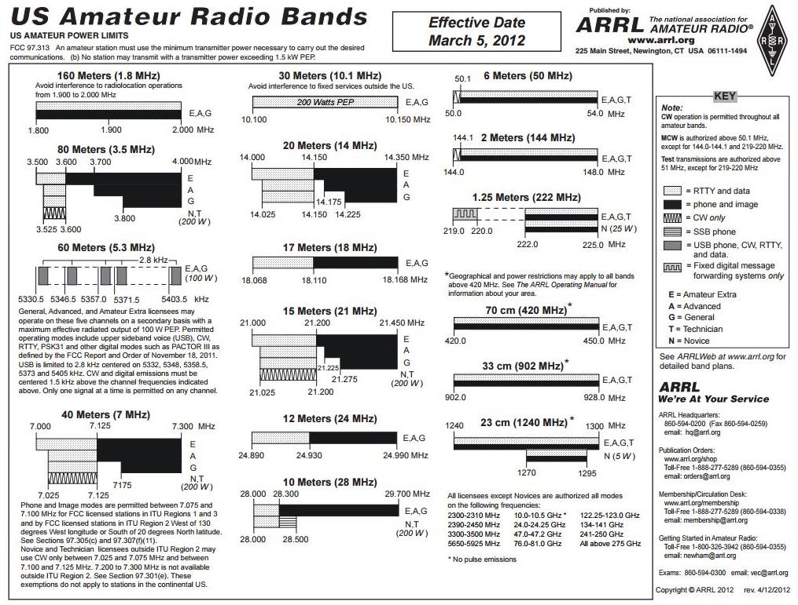
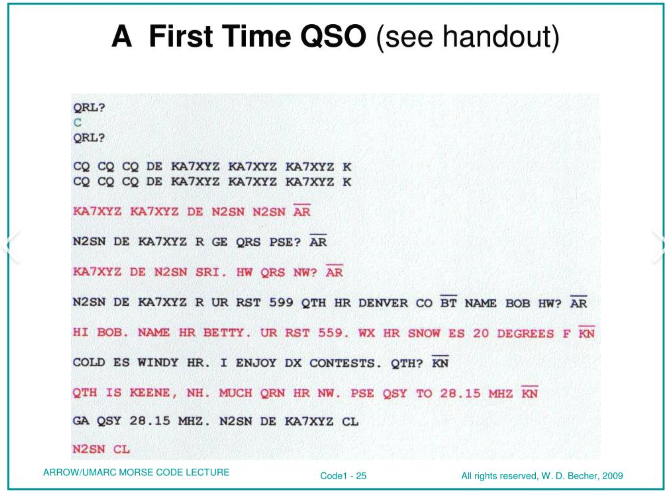

Radio Links
A
Main sites
Radioqth.net/vanity/
UTC +6 CST
Netfinder.radio
OMISS SSB/CW net
QRZ.com
Eham.net
LOTW.arrl.org
DXlook.com
Fists.co.uk
HFunderground.com
B
Search Calls
Reverse Beacon
Antennas
antennas.md
JPC-12 Quick Deploy
JPC-12 Setup guide
JPC-12 Sheet
JPC-12 Specs
Winlink
Lab599 TX-500
Winlink experience
Digirig Lab599 TX-500
Digirig Lab599 TX-500
Lab599 TX-500 kit thomas k4swl youtube
Raspberry P1
Raspberry P2
Winlink on Raspberry P3
winlink.org/
winlinkwednesday.net/
D
mesh
Meshmap.net
mspmesh.org MN nets
mspmesh.org/chat
Reddit Meshnet MN
reddit.com/r/meshnet
ebay Meshtastic T-Deck LoRa
YT Review Commercial
SeeedStudio WioTracker L1 Pro
WioTracker L1 Pro Review
Atlavox M1 Meshtastic
| BAND λ | Frequency | Freq.Range | CW Digital MHz | SSB |
|---|---|---|---|---|
| 180 m | .9 MHz | .530 - 1.700 MHz | AM broadcast | ------------- |
| 160 m | 1.8 MHz | 1.800 - 2.000 MHz | 1.800 - 2.000 | Medium Freq |
| 80 m | 3.5 MHz | 3.500 - 4.000 MHz | 3.500 - 3.600 | ------------- |
| 40 m | 7.0 MHz | 7.000 - 7.300 MHz | 7.000 - 7.125 | 7.125 - 7.300 |
| 31 m | 9.5 MHz | 9.400 - 9.900 MHz | Shortwave | World Band |
| 30 m | 10.0 MHz | 10.100 - 10.150 MHz | CW/Digital Only | ------------- |
| 20 m | 14.0 MHz | 14.000 - 14.350 MHz | 14.000 - 14.150 | ------------- |
| 17 m | 18.0 MHz | 18.068 - 18.168 MHz | WARC Band | ------------- |
| 15 m | 21.0 MHz | 21.000 - 21.450 MHz | 21.000 - 21.200 | ------------- |
| 12 m | 24.0 MHz | 24.890 - 24.990 MHz | WARC Band | ------------- |
| 10 m | 28.0 MHz | 28.000 - 29.700 MHz | --------------- | ------------- |
| 6 m | 50.0 MHz | 50.000 - 50.100 MHz | --------------- | ------------- |
| 3 m | 88.0 MHz | 88.000 - 108.000 MHz | FM broadcast | ------------- |

hambands US morse code
morse code 
morse code qso